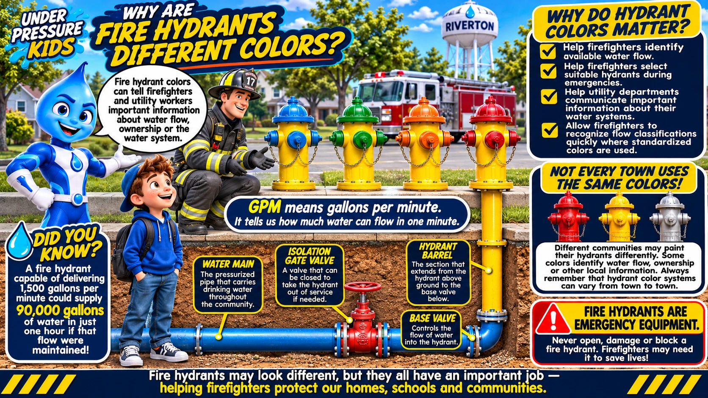

Why Are Fire Hydrants Different Colors?

Max noticed something interesting while exploring Riverton.
Some fire hydrants were red, others were yellow, and some even had different colored tops!
“Why aren't they all the same color?”
Drip explained that those colors can sometimes tell us something important.
More Than Decoration
Different towns and cities use different colors for their fire hydrants.
Some communities paint their hydrants bright colors to make them easier for firefighters to find.
Others use colors to provide information about their water systems.
Colors Can Tell a Story
Some water utilities use different colored tops to help firefighters understand how much water a hydrant can deliver.
Other communities use colors to identify different water systems or simply to make their hydrants easy to recognize.
There isn't one color system used by every town.
How Do Workers Know?
Water utility workers perform special tests to measure how much water a hydrant can deliver.
This information helps firefighters prepare for emergencies.
Bolt would love to see the equipment used for those tests!
Did You Know?
Two fire hydrants that look exactly alike might deliver very different amounts of water!
Your Next Discovery
With an adult, see how many different hydrant colors you can spot around your town.
What colors does your community use?
Keep exploring! There's an amazing world beneath your feet.